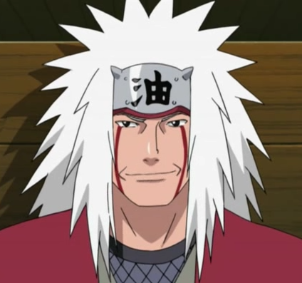

Jiraiya (自来也, Jiraiya) foi um dos Sannin Lendários, junto com Tsunade e Orochimaru, treinados por Hiruzen Sarutobi. Ele era um auto-proclamado super-pervertido, e o escritor da popular série de livros de ficção para adultos, chamado Icha Icha. Ele também era conhecido como o Sábio dos Sapos (虾蟇仙人, Gama Sennin), por causa da sua assinatura de invocação de sapos, e por seu status como sábio.